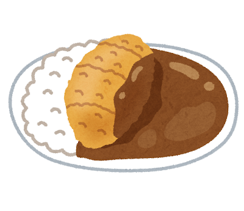
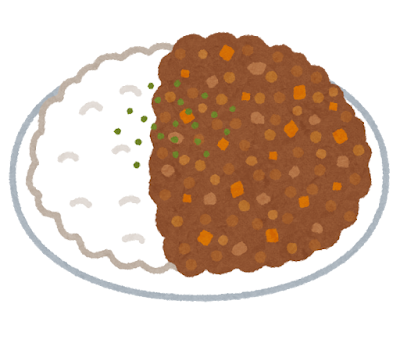
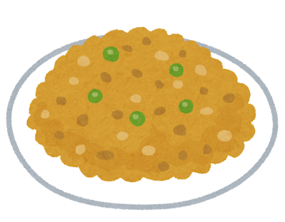
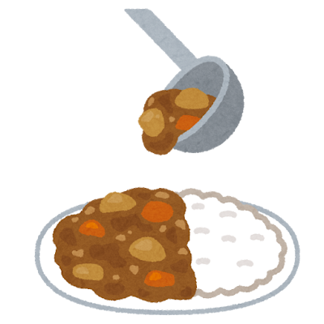
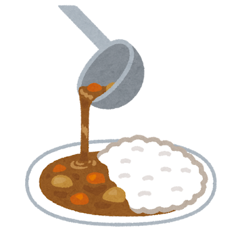

Curry Rice: Japan’s Beloved Comfort Food

A Dish Twice Borrowed
Japanese curry has one of the most surprising origin stories in all of world cuisine. Curry originated in India, was adopted by the British during the colonial era, and then arrived in Japan via the British Royal Navy in the late 19th century during the Meiji Restoration. The Imperial Japanese Navy adopted curry as a staple meal because it was nutritious, easy to prepare in large quantities, and — crucially — helped prevent beriberi among sailors.
By the early 20th century, curry rice (kare raisu カレーライス) had spread from military mess halls to civilian homes. In 1926, the S&B company began selling curry powder domestically, and by the 1960s, instant curry roux blocks made it effortless to prepare at home. Today, the Japanese eat curry an estimated 6.7 billion servings per year — making it arguably more popular in Japan than in the country of its origin.
What Makes Japanese Curry Different
Japanese curry is nothing like its Indian or Thai counterparts. It is thick, mild, and sweet — a gentle, velvety sauce built from a roux of flour, oil, and curry powder, enriched with grated apple, honey, and sometimes chocolate. The spice level is moderate; the emphasis is on depth and umami rather than heat.
A plate of Japanese curry is also defined by its accompaniments: a mound of short-grain Japanese rice, the curry ladled beside it, and pickled fukujinzuke (red relish) or rakkyo (pickled shallots) on the side for brightness and crunch.
Iconic Variations
Classic Curry Rice (カレーライス)
The standard: chunks of potato, carrot, onion, and pork or beef in a rich brown curry sauce served alongside white rice. This is the version that every Japanese child grows up eating — homemade, often from a box of roux, and always better on the second day when the flavors have deepened.
Katsu Curry (カツカレー)
A breaded, deep-fried pork cutlet (tonkatsu) served with curry sauce — the marriage of two of Japan s most beloved comfort foods. Crispy, rich, and indulgent, katsu curry is the ultimate stadium food and a staple of curry chain restaurants like CoCo Ichibanya.

Keema Curry (キーマカレー)
A drier, more intensely spiced curry made with ground meat — Japan s interpretation of the Indian keema. Often served with a soft-boiled egg on top, it represents the newer wave of curry shops pushing toward bolder flavors.

More Curry Styles



Navy Curry and Regional Pride
The Japanese Maritime Self-Defense Force continues the naval curry tradition to this day. Every Friday is curry day on naval vessels and bases — a practice that helps sailors keep track of the days at sea. Each ship has its own closely guarded curry recipe, and annual navy curry competitions are a source of fierce pride. The city of Yokosuka, home to a major naval base, has branded itself the “City of Navy Curry” and hosts curry festivals celebrating the dish s military heritage.
Japanese curry is proof that a dish does not need to be authentic to be genuine. Borrowed twice over, it became something entirely its own — a taste of home for an entire nation.